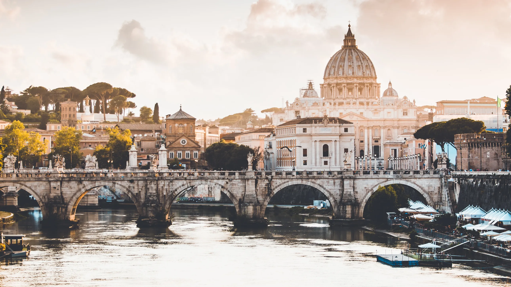
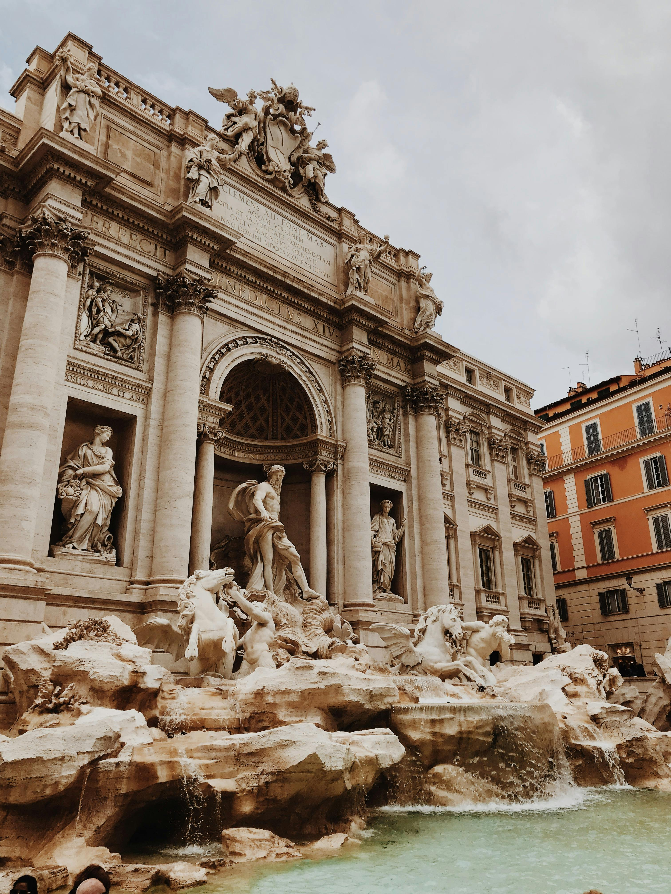
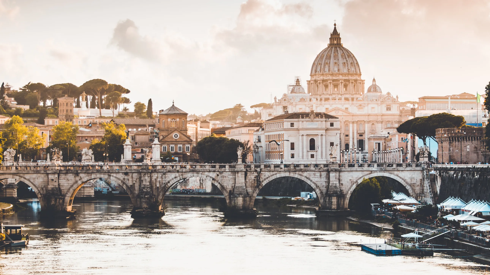
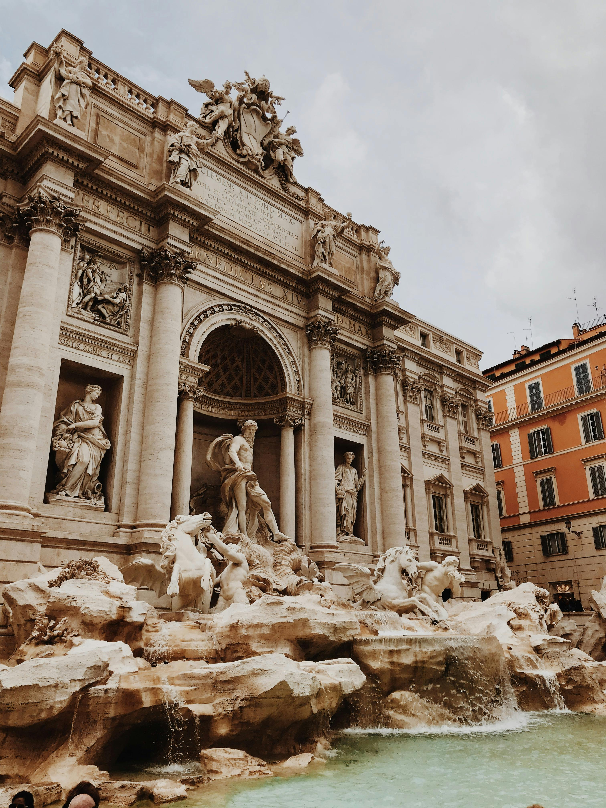

Rome, the Eternal City, stands as a testament to the enduring legacy of one of the world’s greatest civilizations. From the mighty Colosseum to the grandeur of St. Peter’s Basilica, Rome’s iconic landmarks offer a glimpse into its rich and storied past. As you wander through the cobblestone streets of the historic center, you’ll encounter ancient ruins nestled alongside bustling piazzas and Renaissance palaces, creating a captivating tapestry of past and present. Whether you’re exploring the majestic ruins of the Roman Forum, tossing a coin into the Trevi Fountain, or marveling at the awe-inspiring beauty of the Vatican Museums, Rome’s timeless allure is sure to leave you spellbound. Immerse yourself in Rome’s vibrant street life, where the hustle and bustle of modern city living blend seamlessly with centuries-old traditions. Take a leisurely passeggiata along the charming streets of Trastevere, where colorful facades, quaint cafes, and lively trattorias create an atmosphere of warmth and conviviality.
Sample authentic Roman cuisine in cozy osterias, where plates of creamy carbonara, crispy fried artichokes, and mouthwatering gelato await eager diners. And as the sun sets over the city, join locals and visitors alike in raising a glass of wine to la dolce vita – the sweet life – that permeates every corner of this enchanting city. In Rome, every moment is an opportunity to embrace the rich tapestry of history, culture, and life that defines this eternal metropolis. Experience the heartbeat of Rome’s cultural scene as you delve into its world-renowned art and architecture. Lose yourself in the grandeur of the Vatican City, home to the magnificent Sistine Chapel adorned with Michelangelo’s breathtaking frescoes. Wander through the corridors of the Capitoline Museums, where ancient sculptures and Renaissance masterpieces await around every corner. Explore the hidden gems of Rome’s neighborhoods, where street art adorns centuries-old walls and contemporary galleries showcase the works of emerging artists.